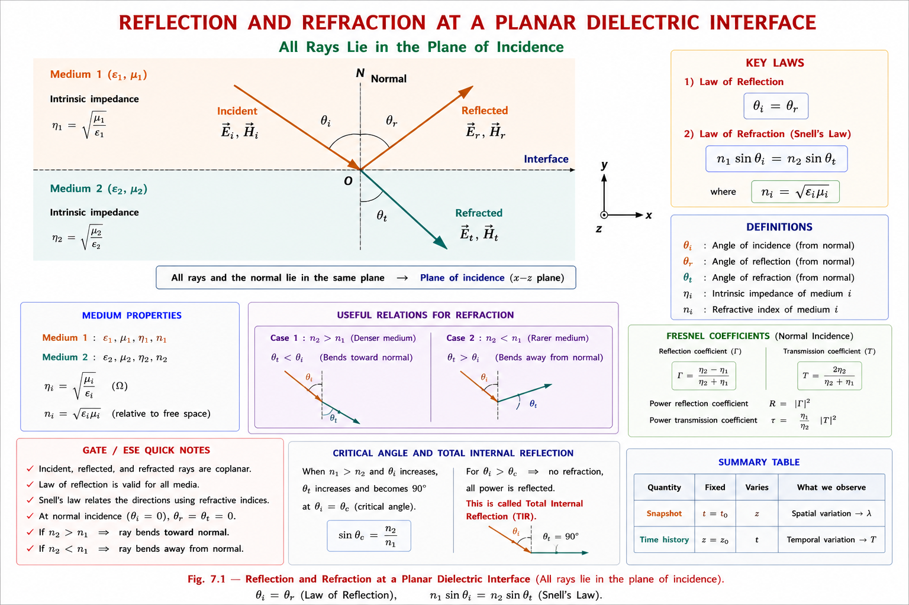
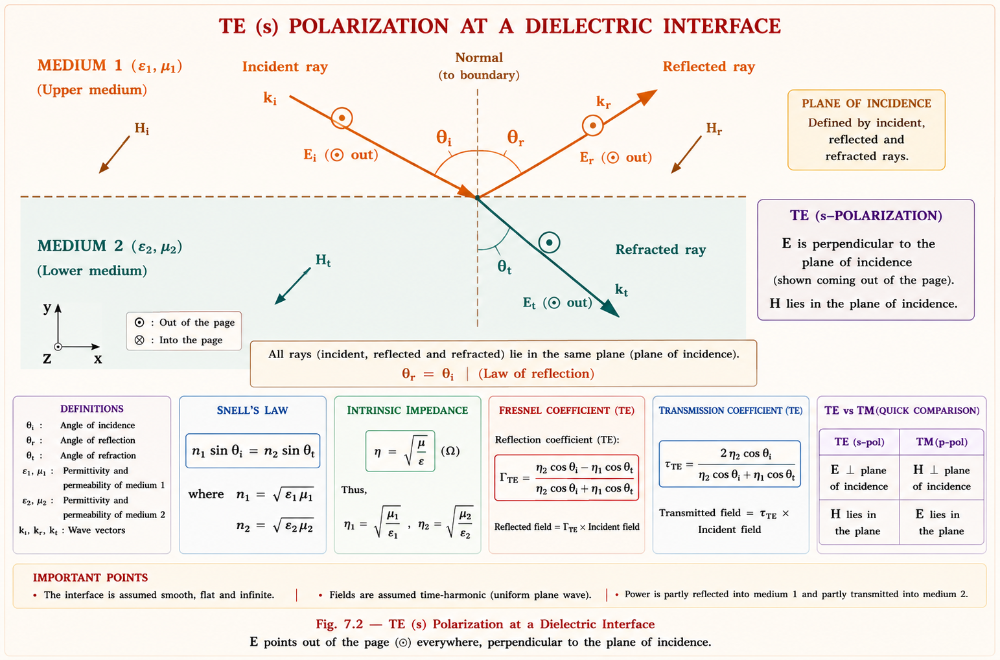
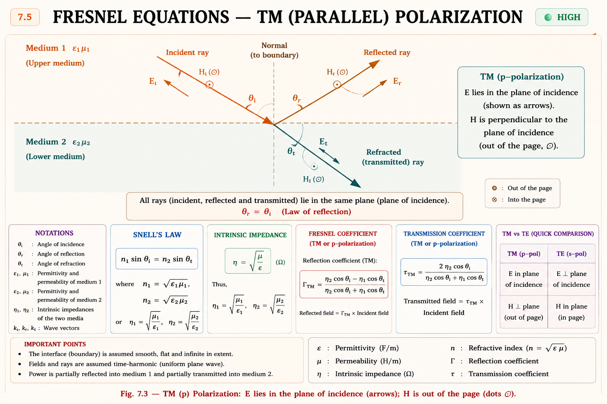
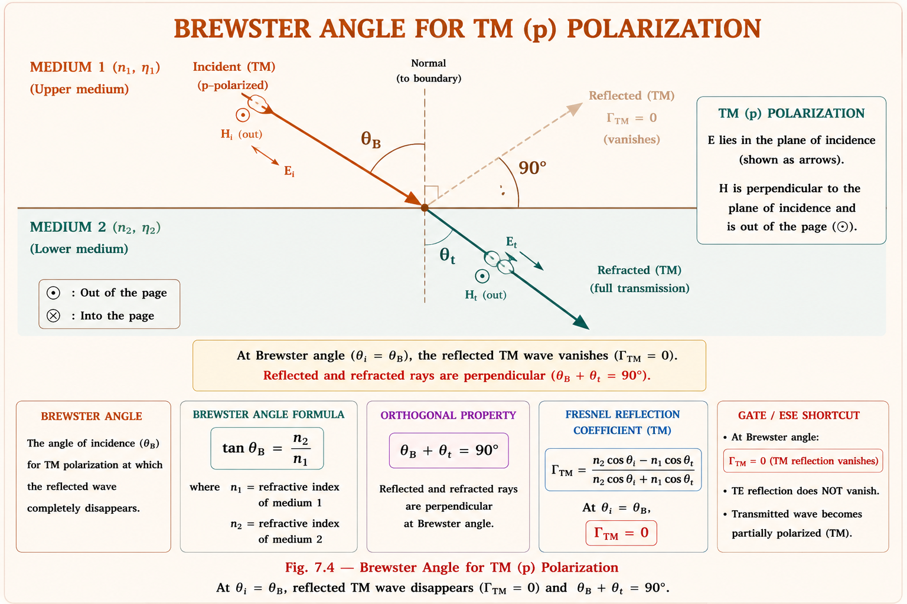
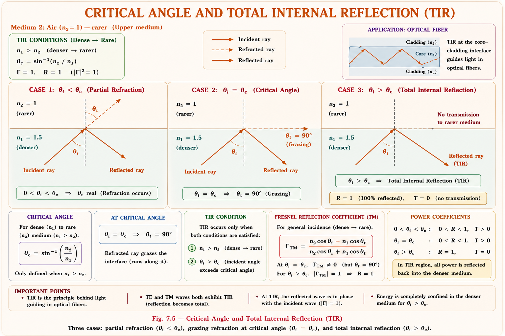
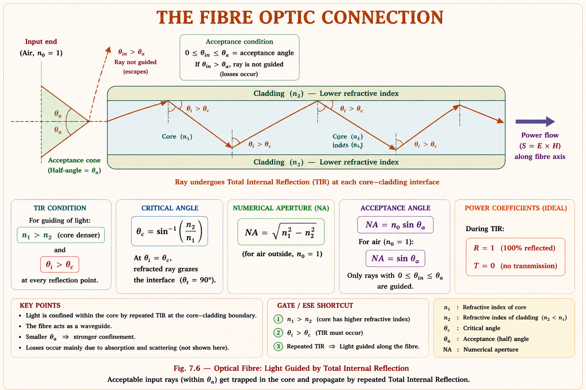
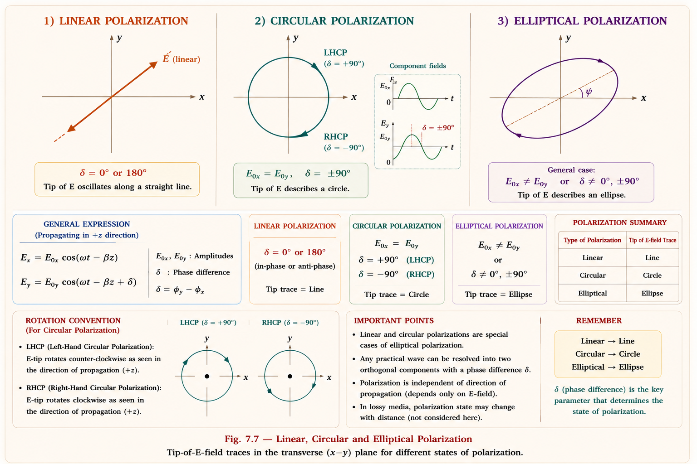
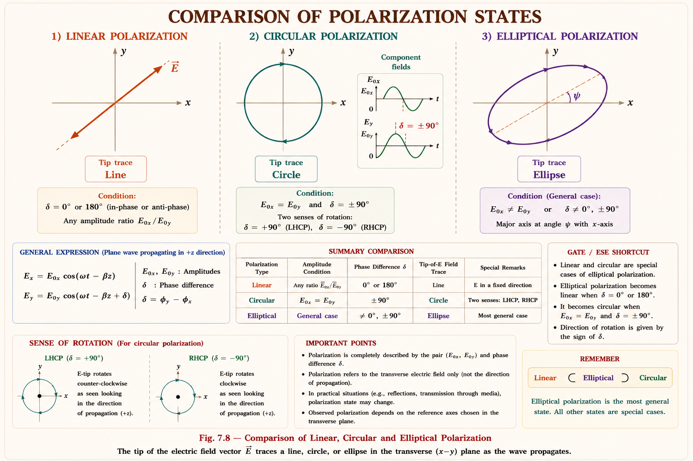

Fresnel equations, Snell's law, Brewster angle, critical angle, and complete polarization theory — linear, circular, elliptical — with full derivations, intuitive analogies, original SVG diagrams, and exhaustive GATE/IES PYQ coverage.
Imagine standing on a hot day and seeing a shimmering pool of water on the road ahead — yet there is no water. Or notice how a straw looks bent when dipped in a glass. These are not tricks of the mind; they are demonstrations of reflection and refraction of electromagnetic waves at boundaries between different media.
In engineering, whenever a wave travelling in one medium encounters another medium with different electrical properties (\(\varepsilon\), \(\mu\), \(\sigma\)), part of the wave bounces back (reflection) and part continues forward with a changed direction (refraction). Understanding how much reflects, how much transmits, and at what angle is the heart of this chapter.
Fibre-optic cables (total internal reflection), Radar cross-section (stealth aircraft coatings exploit Brewster angle), Antenna design (ground-plane reflections), Satellite dish pointing (wave refraction through atmosphere), Polarized sunglasses (reduce glare via Brewster angle), Optical coatings (anti-reflection films on camera lenses), Microwave ovens (standing waves from reflection).

Before deriving the Fresnel equations, we must recall the four electromagnetic boundary conditions at an interface between Medium 1 and Medium 2 (from Hayt & Buck, Engineering Electromagnetics).[1]
1. Tangential \(\mathbf{E}\) is continuous: \(E_{1t} = E_{2t}\)
2. Tangential \(\mathbf{H}\) is continuous (no surface current): \(H_{1t} =
H_{2t}\)
3. Normal \(\mathbf{D}\) is continuous (no surface charge): \(D_{1n} =
D_{2n}\)
4. Normal \(\mathbf{B}\) is continuous: \(B_{1n} = B_{2n}\)
The tangential conditions (1 and 2) are the most powerful — applying them to incident + reflected waves in Medium 1 and the transmitted wave in Medium 2 directly yields both the phase matching condition (Snell's law) and the amplitude ratios (Fresnel equations).
For boundary conditions to hold at every point along the interface at every instant, the spatial phase variation of all three waves along the boundary must be identical. This powerful argument — called phase matching — forces Snell's law without any additional assumptions.
where \(k = \omega\sqrt{\mu\varepsilon}\) is the wavenumber in the respective medium.
From \(k_1\sin\theta_i = k_1\sin\theta_r\) we get \(\theta_i = \theta_r\) — the law of reflection. From \(k_1\sin\theta_i = k_2\sin\theta_t\) we get Snell's law of refraction.
The wavenumber in a medium with permittivity \(\varepsilon_r\) and permeability \(\mu_r\) is:
where \(n = \sqrt{\mu_r \varepsilon_r}\) is the refractive index and \(k_0 = \omega/c\).
Substituting into the phase matching condition \(k_1\sin\theta_i = k_2\sin\theta_t\):
Imagine a marching band walking from grass onto a concrete pavement at an angle. The columns that hit the pavement first speed up, while those still on grass continue slowly. This speed difference forces the entire line to pivot — the band changes direction. Waves do exactly the same thing: the portion of the wavefront that enters the faster medium first speeds up, pivoting the wave toward or away from the normal. This is the physical origin of Snell's law.
Refractive index for electromagnetics is \(n = \sqrt{\varepsilon_r \mu_r}\). For most dielectrics, \(\mu_r = 1\), so \(n = \sqrt{\varepsilon_r}\). Do not confuse \(\varepsilon_r\) with \(n\). If a problem gives \(\varepsilon_r = 4\), then \(n = 2\), not 4. GATE has directly trapped students with this.
Now we find how much of the wave reflects and how much transmits. This depends on the polarization — the orientation of the electric field relative to the plane of incidence.
TE (Transverse Electric) — also called s-polarization (German:
senkrecht = perpendicular): the electric field \(\mathbf{E}\) is perpendicular to the
plane of incidence (i.e., parallel to the interface).
TM (Transverse
Magnetic) — also called p-polarization: the magnetic field \(\mathbf{H}\)
is perpendicular to the plane of incidence; \(\mathbf{E}\) lies in the plane of incidence.

Let the electric field amplitudes of incident, reflected, and transmitted waves be \(E_i\), \(E_r\), \(E_t\) respectively. Since \(\mathbf{E}\) is tangential to the interface for TE, boundary condition 1 gives:[2]
The magnetic field \(\mathbf{H} = \mathbf{E}/\eta\) lies in the plane of incidence for TE. Only the component tangential to the boundary (i.e., the component along the interface) is relevant. This component is \(H\cos\theta\) for each wave:
The negative sign on \(E_r\) arises because the reflected wave travels in the direction opposite to the incident wave, reversing the \(H\) component.
Dividing (2) by (1) and solving simultaneously:
Since \(\eta = \sqrt{\mu/\varepsilon} = \eta_0/n\), the intrinsic impedance ratio becomes
\(\eta_2/\eta_1 = n_1/n_2\). Substituting, the TE Fresnel equations in terms of refractive index
and angles are:
\[\Gamma_\perp = \dfrac{n_1\cos\theta_i - n_2\cos\theta_t}{n_1\cos\theta_i + n_2\cos\theta_t}\]
\[\tau_\perp = \dfrac{2n_1\cos\theta_i}{n_1\cos\theta_i + n_2\cos\theta_t}\]
The reflectance \(R\) (ratio of reflected power to incident power) and transmittance \(T\) are:
Note: \(R + T = 1\) always (energy conservation). Also \(\tau = 1 + \Gamma\) for TE.

For TM polarization, the electric field has components both normal and tangential to the interface. We apply tangential \(E\) and tangential \(H\) continuity using the in-plane components. The derivation (Sadiku, Elements of Electromagnetics) yields:[3]
Different textbooks use different sign conventions for TM Fresnel coefficients. The convention here (Hayt, Sadiku) defines \(\Gamma_\parallel\) based on the electric field amplitude directly. Some optics texts (Hecht) define it differently, giving a sign flip. Always check which convention is used when reading solutions.
| Quantity | TE (s, ⊥) | TM (p, ∥) |
|---|---|---|
| E orientation | ⊥ to plane of incidence | ∥ to plane of incidence |
| Γ formula | \(\dfrac{\eta_2\cos\theta_i - \eta_1\cos\theta_t}{\eta_2\cos\theta_i + \eta_1\cos\theta_t}\) | \(\dfrac{\eta_1\cos\theta_i - \eta_2\cos\theta_t}{\eta_1\cos\theta_i + \eta_2\cos\theta_t}\) |
| τ formula | \(\dfrac{2\eta_2\cos\theta_i}{\eta_2\cos\theta_i + \eta_1\cos\theta_t}\) | \(\dfrac{2\eta_2\cos\theta_i}{\eta_1\cos\theta_i + \eta_2\cos\theta_t}\) |
| Brewster angle | No Brewster angle | Yes — Γ∥ = 0 |
| Normal incidence (θ=0) | \(\Gamma = \dfrac{\eta_2 - \eta_1}{\eta_2 + \eta_1}\) (both reduce to same formula) | |
The Brewster angle \(\theta_B\) is the angle of incidence at which TM-polarized light is completely transmitted — zero reflection for that polarization. This makes the Brewster angle enormously useful for producing polarized light and reducing glare.
Set \(\Gamma_\parallel = 0\):
Combined with Snell's law \(n_1\sin\theta_B = n_2\sin\theta_t\), and using \(\eta = \eta_0/n\) for non-magnetic media:
For air (\(n_1=1\)) to glass (\(n_2=1.5\)): \(\theta_B = \arctan(1.5) \approx 56.3°\)
At the Brewster angle, the reflected and refracted rays are exactly perpendicular to each other (\(\theta_B + \theta_t = 90°\)). This is the physical reason for zero reflection for TM: if the reflected and refracted were at 90°, the oscillating dipoles that would generate the reflected wave are exactly aligned along the would-be reflected direction — and a dipole cannot radiate along its own axis. Hence no TM reflection.

For non-magnetic media (\(\mu_1 = \mu_2\)), there is no Brewster angle for TE polarization — \(\Gamma_\perp\) never reaches zero. Students confuse this. The TE coefficient can become zero only if \(\mu_1 \neq \mu_2\) (magnetic media), which is a rare case not typically tested.
When a wave travels from a denser medium to a rarer medium (\(n_1 > n_2\)), Snell's law gives \(\sin\theta_t = (n_1/n_2)\sin\theta_i > \sin\theta_i\). As \(\theta_i\) increases, \(\theta_t\) increases faster. At some critical angle \(\theta_c\), the refracted ray grazes along the boundary (\(\theta_t = 90°\)). Beyond this angle, no transmitted wave exists — all energy reflects. This is Total Internal Reflection (TIR).
For glass (\(n_1=1.5\)) to air (\(n_2=1\)): \(\theta_c = \arcsin(1/1.5) = 41.8°\)

Beyond the critical angle, the reflection coefficient magnitude becomes unity (\(|\Gamma| = 1\)), but not zero transmission coefficient — instead the "transmitted" field becomes an evanescent wave: a non-propagating, exponentially decaying field that exists in Medium 2 but carries no average power across the boundary.
When \(\theta_i > \theta_c\), \(\sin\theta_t = (n_1/n_2)\sin\theta_i > 1\), which means \(\cos\theta_t = \sqrt{1-\sin^2\theta_t}\) becomes imaginary. The transmitted field takes the form \(e^{-\alpha z} e^{j\beta x}\) — it propagates along the interface (\(x\)-direction) but decays exponentially away from it (\(z\)-direction). This is exploited in frustrated TIR (used in touch screens and optical couplers).

Polarization describes the time-varying direction of the electric field vector \(\mathbf{E}\) at a fixed point in space as the wave passes. Since \(\mathbf{E}\) must always be perpendicular to the direction of propagation, its tip traces a curve in the plane transverse to propagation. The shape of this curve defines the polarization state.
Any plane wave propagating in the \(+z\) direction can be written as: \[\mathbf{E}(z,t) = E_{x0}\cos(\omega t - \beta z + \delta_x)\,\hat{x} + E_{y0}\cos(\omega t - \beta z + \delta_y)\,\hat{y}\] The type of polarization depends on the amplitudes \(E_{x0},\, E_{y0}\) and the phase difference \(\delta = \delta_y - \delta_x\).
When the two components are in phase (\(\delta = 0°\) or \(180°\)) or when only one component exists, the electric field vector oscillates along a fixed straight line. The wave is said to be linearly polarized.
The tilt angle of the polarization direction from the \(x\)-axis: \(\psi = \arctan(E_{y0}/E_{x0})\)

When both components have equal amplitude and a phase difference of exactly ±90°, the electric field vector rotates at constant angular velocity \(\omega\) and traces a circle. This is circular polarization.
| Type | Phase δ | Rotation (looking into wave) | IEEE / Optics Name |
|---|---|---|---|
| RHCP | δ = −90° | Clockwise (right-hand screw rule) | Right-Hand Circularly Polarized |
| LHCP | δ = +90° | Counter-clockwise | Left-Hand Circularly Polarized |
In IEEE (engineering) convention: RHCP means the thumb of the right hand points in the direction of propagation and fingers curl in the direction of E rotation. In optics convention: RHCP means E rotates clockwise when viewed by the observer (looking into the wave). These are opposite! GATE follows IEEE convention. IES problems sometimes use optics convention. Read the question carefully.
In the most general case, \(E_{x0} \neq E_{y0}\) and \(\delta \neq 0°, 90°, 180°\). The tip of \(\mathbf{E}\) traces an ellipse. Both linear and circular polarizations are special cases of elliptical polarization.

| Type | Amplitudes | Phase δ | E tip traces | Special cases |
|---|---|---|---|---|
| Linear | Any | 0° or 180° | Straight line | Horizontal, Vertical, Diagonal |
| Circular (RHCP) | \(E_{x0}=E_{y0}\) | −90° | Circle (CW) | — |
| Circular (LHCP) | \(E_{x0}=E_{y0}\) | +90° | Circle (CCW) | — |
| Elliptical | Any | Any other | Ellipse | Linear and circular are special cases |
Phase 0° → Linear ; Phase ±90°, Equal amp → Circular ; Everything else → Elliptical. Or remember: "Delta zero = line, delta ninety equal = circle, delta anything else = ellipse."
Step 1: Refractive indices. \(n_1 = \sqrt{\varepsilon_{r1}\mu_{r1}} = \sqrt{1} = 1\). \(n_2 = \sqrt{\varepsilon_{r2}\mu_{r2}} = \sqrt{4} = 2\).
Step 2: Apply Snell's law. \(n_1\sin\theta_i = n_2\sin\theta_t \implies 1 \times \sin 30° = 2\sin\theta_t\)
Interpretation: The wave bends toward the normal (14.48° < 30°) because Medium 2 is optically denser (\(n_2 > n_1\)). The wave slows down from \(c\) to \(c/2\).
Step 1: Compute impedances. For non-magnetic media: \(\eta_1 = \eta_0 = 377\,\Omega\), \(\eta_2 = \eta_0/n_2 = 377/2 = 188.5\,\Omega\).
Step 2: Compute cosines. \(\cos 30° = 0.866\), \(\cos 14.48° = 0.968\).
Step 3: Apply TE Fresnel formula.
Step 4: Transmission coefficient. \(\tau_\perp = 1 + \Gamma_\perp = 1 - 0.382 = 0.618\)
Step 5: Reflectance. \(R_\perp = |\Gamma_\perp|^2 = (0.382)^2 = 0.146 = 14.6\%\)
The negative sign on \(\Gamma_\perp\) means there is a phase reversal of 180° on reflection (going from rarer to denser medium). About 14.6% of incident power is reflected.
Step 1: Refractive indices. \(n_1 = \sqrt{2.25} = 1.5\) (glass), \(n_2 = \sqrt{81} = 9\) (water at microwave freq).
Step 2: Brewster angle. \(\tan\theta_B = n_2/n_1 = 9/1.5 = 6 \implies \theta_B = \arctan(6) = 80.54°\)
Step 3: Angle of refraction at Brewster. Since \(\theta_B + \theta_t = 90°\): \(\theta_t = 90° - 80.54° = 9.46°\)
Step 4: Verify with Snell's law. \(n_1\sin\theta_B = 1.5\sin 80.54° = 1.5 \times 0.986 = 1.479\). \(n_2\sin\theta_t = 9\sin 9.46° = 9 \times 0.164 = 1.478\). ✓ (matches within rounding)
Step 1: Refractive indices. \(n_1 = 3\), \(n_2 = 2\). Since \(n_1 > n_2\), TIR is possible.
Step 2: Critical angle. \(\sin\theta_c = n_2/n_1 = 2/3 \implies \theta_c = \arcsin(2/3) = 41.81°\)
Step 3: Test for \(\theta_i = 45°\). Since \(45° > 41.81° = \theta_c\), Total Internal Reflection occurs. The reflection coefficient magnitude \(|\Gamma| = 1\) and reflectance \(R = 100\%\).
Step 1: Identify parameters. \(E_{x0} = 4\), \(E_{y0} = 4\), \(\delta = \delta_y - \delta_x = -90° - 0° = -90°\).
Step 2: Check conditions. \(E_{x0} = E_{y0} = 4\) ✓ and \(\delta = -90°\) ✓ → Circular Polarization.
Step 3: Determine handedness. \(\delta = -90°\) with propagation in \(+z\). At \(t=0, z=0\): \(\mathbf{E} = 4\hat{x} + 0\hat{y}\). At \(\omega t = 90°\): \(\mathbf{E} = 0\hat{x} + 4\hat{y}\). E rotates from \(+x\) toward \(+y\) (counter-clockwise when viewed from \(-z\), or clockwise when viewed from \(+z\) looking into the wave) → Right-Hand Circularly Polarized (RHCP) per IEEE convention.
A plane wave is incident at 45° on an interface from free space (\(\varepsilon_{r1}=1\)) to a medium with \(\varepsilon_{r2}=3\), \(\mu_{r2}=1\). The refracted angle \(\theta_t\) is closest to:
Key insight: \(n_2 = \sqrt{\varepsilon_{r2}} = \sqrt{3} = 1.732\). Apply \(n_1\sin\theta_i = n_2\sin\theta_t\).
For an interface between media with \(\varepsilon_{r1}=9\) (medium 1) and \(\varepsilon_{r2}=1\) (medium 2), for a wave from medium 1 to medium 2. The critical angle for total internal reflection is:
The Brewster angle \(\theta_B\) for a wave going from medium 1 (\(\varepsilon_{r1}=1\)) to medium 2 (\(\varepsilon_{r2}=4\)) is:
Note: \(\tan\theta_B = n_2/n_1 = \sqrt{\varepsilon_{r2}}/\sqrt{\varepsilon_{r1}} = \sqrt{\varepsilon_{r2}/\varepsilon_{r1}}\) for non-magnetic media.
A plane wave in free space is normally incident on a lossless dielectric half-space with \(\varepsilon_r = 4\), \(\mu_r = 1\). What fraction of the incident power is reflected?
Solution: \(\eta_1 = 377\,\Omega\), \(\eta_2 = 377/2 = 188.5\,\Omega\). At normal incidence: \(\Gamma = (\eta_2-\eta_1)/(\eta_2+\eta_1) = (188.5-377)/(188.5+377) = -188.5/565.5 = -1/3\). Reflectance \(R = (1/3)^2 = 1/9 = 11.11\%\). ✓
The wave \(\mathbf{E} = (3\hat{x} + 4\hat{y})e^{j\omega t}\) represents which polarization?
For circular polarization of a wave propagating in the \(z\)-direction, which condition is necessary?
At a dielectric interface for non-magnetic media, the reflection coefficient for TM polarization can be zero at the Brewster angle. For TE polarization, the reflection coefficient:
Explanation: \(\Gamma_\perp\) for TE can only be zero when \(\eta_2\cos\theta_i = \eta_1\cos\theta_t\). For non-magnetic media this would require \(n_1\cos\theta_i = n_2\cos\theta_t\) which, combined with Snell's law, has no real solution when \(n_1 \neq n_2\). Hence TE never has zero reflection.
Have a question about Reflection, Refraction or Polarization? Ask our AI tutor for instant, detailed explanations.
🟢 HIGH Snell's Law — \(n_1\sin\theta_i =
n_2\sin\theta_t\). Know which way the ray bends.
🟢 HIGH Critical Angle — \(\theta_c =
\arcsin(n_2/n_1)\) only when \(n_1 > n_2\).
🟢 HIGH Brewster Angle — \(\tan\theta_B =
n_2/n_1\), TM only, \(\theta_B + \theta_t = 90°\).
🟢 HIGH Normal Incidence — \(\Gamma =
(\eta_2-\eta_1)/(\eta_2+\eta_1)\), both TE and TM same formula.
🟢 HIGH Polarization types — know conditions
for each and IEEE handedness convention.
🟡 MED Fresnel equations (oblique) — know
which formula is TE vs TM.
🔴 LOW Ellipse tilt angle — complex; rarely
tested numerically.
\(n_1\sin\theta_i = n_2\sin\theta_t\) · \(n=\sqrt{\varepsilon_r\mu_r}\) · denser → bends toward normal
\(\Gamma_\perp = \dfrac{\eta_2\cos\theta_i - \eta_1\cos\theta_t}{\eta_2\cos\theta_i + \eta_1\cos\theta_t}\) · \(\tau_\perp = 1 + \Gamma_\perp\)
\(\Gamma_\parallel = \dfrac{\eta_1\cos\theta_i - \eta_2\cos\theta_t}{\eta_1\cos\theta_i + \eta_2\cos\theta_t}\) · note swapped η positions vs TE
\(\tan\theta_B = n_2/n_1\) · TM only · \(\theta_B + \theta_t = 90°\)
\(\theta_c = \arcsin(n_2/n_1)\) · only when \(n_1 > n_2\) · TIR for \(\theta_i \geq \theta_c\)
Linear: δ=0/180° · Circular: δ=±90°, equal amp · Elliptical: general case
\(\Gamma = (\eta_2-\eta_1)/(\eta_2+\eta_1)\) · \(R=|\Gamma|^2\) · \(T=1-R\)
\(R = |\Gamma|^2\) · \(T = 1 - R\) · \(T_\perp\) needs area factor at oblique incidence
Exists in rarer medium beyond TIR · propagates along interface, decays perpendicular · no average power transfer
All technical content is derived from the following standard textbooks. All explanations, derivations, diagrams, and examples are original to Aarova AI.